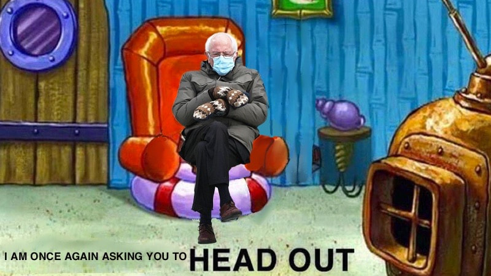

Photoshop: "I am once again, asking you to head out"

The following image was created using Photoshop Illustrator. The dimensions are 800 by 450.
As a member of Gen Z, Sponge Bob has been at the forefront of memes, pop culture, and entertainment. Around last year at the inauguration of
President Joe Biden, Bernie Sanders went viral for sitting in a chair with his mittens. As simple as the moment was, it did go viral and encouraged me
to merge these two icons into a meme for ART 74.